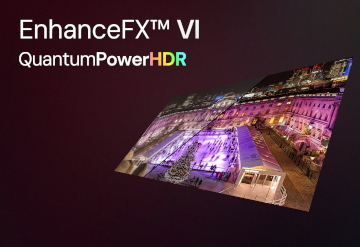
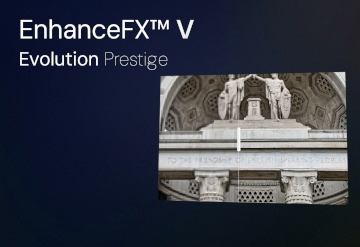
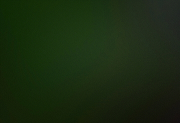
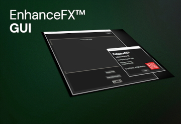
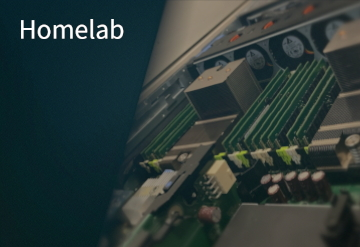
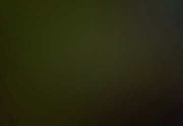
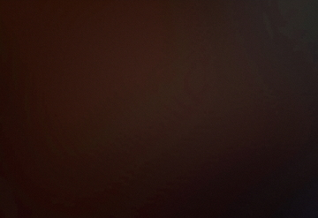

DEC 2024: EnhanceFX™ VI QuantumPowerHDR
A state-of-the-art, hybrid, promptable model for image upscaling and transformation via optional natural language commands. Key upgrades over V include custom 'extremeHEAD' X-Attention, multi-tasking, enhanced frequency analysis, dynamic temporal refinement, quantum processing, and HDR transformation support. As a result, VI delivers uncompromised, power-house precision. With my proprietary 'ViRAU' activation designed in-house, VI sets a new groundbreaking standard for SISR; Welcome to the forefront of image processing.
github.com/OguzhanCOG/EnhanceFX | © OguzhanCOG: EnhanceFX™ Series, All Rights Reversed.

AUG 2024: EnhanceFX™ V Evolution Prestige
An advanced hybrid MoE model crafted for 16x image upscaling with unmatched precision and clarity. V's architecture excels at producing sharp, contextually rich details through dense blocks, strategic skip connections, and staggered layers. Powered by custom Transformer trunks and novel axial attention to capture the most realistic patterns, and supported by a proprietary discriminator for training, V consistently delivers visually stunning results with exceptional resilience to challenging image conditions.
github.com/OguzhanCOG/EnhanceFX | © OguzhanCOG: EnhanceFX™ Series, All Rights Reversed.

MAR 2023: NeuralFusion™ II
NeuralFusion™ II is a bespoke transformer LLM built with PyTorch, optimised for scientific, technical, and academic tasks. Featuring the proprietary 'extremeHEAD' attention mechanism and a CoT system, it delivers high precision and reduced circular reasoning. With 8/42 billion parameters and a staggering 768K token context window, the model excels in producing concise, logical outputs. Enhanced by TypoDetectFX and dynamic ParaSync processing, NeuralFusion™ II demonstrates reliable performance across various technical domains.
github.com/OguzhanCOG/NeuralFusionII | © OguzhanCOG: NeuralFusion™ Series, All Rights Reversed.

SEP 2024: NeuralWorks™
NeuralWorks™ is an intuitive toolkit designed for building, training, and deploying custom neural network models, featuring a console-based interface tailored for image classification and processing tasks. Aimed at beginners, it provides step-by-step guidance to help users with no ML background get started in architecture design. With an emphasis on robustness and user-friendliness, NeuralWorks™ strives to empower more people to create their own models. Future expansions will include support for LLMs and other more advanced architectures.
github.com/OguzhanCOG/NeuralWorks

MAY 2024: EnhanceFX™ GUI
The EnhanceFX™ GUI is a streamlined interface designed for seamless interaction with my EnhanceFX™ series of models. Built with usability, compatibility and efficiency in mind, it offers an intuitive layout that guides users through image selection, output configuration, and processing with minimal effort. The central preview window ensures clarity in input selection, while the bottom panel provides straightforward controls for choosing output formats and directories. A user-friendly gateway to image enhancement technology.

SEP 2023: PolyInfoEvolution
A standalone A-Level Computer Science NEA project, regularly maintained for optimal performance. It offers web and console modes, SHA-256 encryption, SQLAlchemy backend, diagnostic data upload and advanced features like a custom CAS, outstanding integral and differential calculus engine, 3D/2D graphing, OzeProStacker, CircleOperationFX, online sync and matrix operations. With AI Chat powered by NeuralFusion™ II, TypoDetectFX integration, task offloading and a verbose, informative menu design philosophy it is a practical workhorse.
AUG 2023: OzeAssist
OzeAssist is an autonomous multi-agent system designed to handle administrative tasks with minimal intervention. It integrates seamlessly with my calendar, phone data, past conversations, and desktop environment to manage emails, research, and spontaneous work ideas. Through SMS prompts, it compiles relevant links and resources, pre-loading them on my desktop to ensure everything is ready when I return. The system simulates interactions and navigates my computer when needed, showcasing how agents can revolutionise complex workflows.

FEB 2023: NeuralWorks™ Custom
NeuralWorks™ Custom (NWCustom) is a lightweight, customisable neural network framework built from scratch, inspired by PyTorch. It offers an innate API for building, training, and running neural networks with all tensors, operations, and ML algorithms defined from the ground up. The system provides flexibility for advanced users while remaining beginner-friendly. Designed for easy experimentation with custom layers and architectures, it's a spin-off from the original NeuralWorks™ project, demonstrating the power of custom network design.

JUL 2022: ParaSync
ParaSync is an autoencoder-based meta-optimisation hyper-network that dynamically adjusts ~2% of a compatible architecture's parameters and behavior flags in real time. It processes system environments (hardware, utilisation, nvidia-smi) and user-defined flags (e.g., academic, code, debate) to fine-tune outputs. Integrated with NeuralFusion™ II, it maps compressed latent relationships between constraints and parameters, optimising inference performance based on prior user data and live feedback for better interactions.

AUG 2019: EnhanceFX™ I
EnhanceFX™ I marks my foray into image super-resolution, inspired by ESRGAN. Built with PyTorch, its generator features RRDBs (5C, like ESRGAN), skip connections, and Spectral, Channel, and Spatial Attention for enhanced contextual detail. The VGG19-based discriminator is used as adversarial loss, trained on a 16K+ dataset of HR and 1080p LR images with techniques to induce artificial diversity. Features include learned adaptive color correction for input-specific enhancements at 8x scale.

OCT 2018: Proxmox Homelab
Always a hardware enthusiast since childhood, my custom homelab is where all my projects have taken shape. A digital powerhouse designed to accelerate innovation and elevate my home's tech ecosystem. Anchored by a Dell PowerEdge R740 (2x Xeon Platinum 8160, 1536GB DDR4, 200TB of HDDs in RAID10) for GAN and LLM training, an older R720 for Docker environments and model inference, and an embedded Raspberry Pi Zero 2 W as a quorum device, it perfectly showcases my other strength; expertise in hardware and enterprise-level networking.

APR 2017: TypoDetectFX
TypoDetectFX is a custom 7-layer FCNN initially developed to test PyTorch for typo detection with direct mappings to output indexes. Over time, it evolved into a safety mechanism for large LLMs and free-entry text prompts, classifying inputs into categories like Normal, Reserved, NSFW, Illegal, and Legal. The system uses a bitwise ASCII string for input, outputting to 8 neurons. Specific inputs trigger safety flags, and probability ranges are handled via a bell curve approximation for suspect inputs. The latest iteration of the model for my A-Level NEA converged quickly, and its final weights were trained on an RTX 2060 SUPER.

EPQ: Training a super-resolution AI model from scratch (A)
For my EPQ, I developed a custom neural network framework featuring convolutional layers, attention mechanisms, the Adam optimizer, and a bespoke backpropagation algorithm. I used this framework to create a GAN trained on artificially degraded image pairs, which later inspired the development of NWCustom and later iterations of EnhanceFX™ (including V and VI). The EPQ paper details model mechanisms, dataset improvement techniques, and empirical training data. The final presentation included a live demo on my laptop while answering questions on demand, and earned an A, just 2 marks short of an A* (FINISH: NOV 2023).

CultureHack2024: Tajdeed
On 20th November, 2024, our group, “.com”, designed and implemented a frontend and backend system for the CMCI department in under 5 hours. The project integrated a PostgreSQL database hosted on AWS, with a Python, Flask, and PyTorch backend, and a clean CSS-styled UI. My NeuralFusionII (8b version) architecture generated real-time course summaries from database entries. Had to overcome self-attention and token over-generation issues with hyper-parameter tuning. The database was hosted on AWS, which ensured scalability. Expertise in ML (myself & Dmytro), databases (Dmytro & myself), and web development (Mehdi & Connor).
TI4 & Imperial College London: DeathBot
From the 11th to the 13th of October, 2024, at Imperial College London, our team developed a death bot that tracks human targets using a pre-trained, edge-detection CNN on a Raspberry Pi 5. The bot featured a large metal ruler mounted to a geared motor, enhancing its intimidation factor. The project was completed over a weekend with strong collaboration, showcasing innovation and rapid execution in a challenging environment.

THERE IS MORE...
My goal with this portfolio is to give others a quick look at what I do and what I’ve accomplished. It doesn’t cover all 70+ of my projects, though!
I prefer to highlight my best work and dedicate the lower half of the portfolio to **documented** hackathons (including Tech Arena 2024) – something I only started doing not too long ago. I hope you have enjoyed reading about my projects!
Thanks!
GitHub Profile: github.com/OguzhanCOG | For more contact information, please use the 'ABOUT (i)' button in the corner.


{kind=link}
{kind=link}
{kind=link}
{kind=link}
{kind=link}
{kind=link}
{kind=link}
{kind=link}
{kind=link}